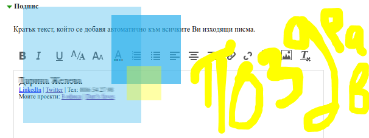

Няколко идеи за подпис в края на имейл
Поздравът
На някои езици има сложни и завъртяни поздрави, които отговарят на специфични случаи или взаимоотношения. За щастие на български има няколко прости поздрава, които прилягат на почти всяка ситуация: "Поздрави", "С уважение", "Хубав ден" или "Благодаря".
Ако компанията ви ползва английски като общ език, тогава с "Best regards", "Kind regards" или "Thank you" няма как да сгрешите.
След това и преди името може да напишете или запетайка (препоръчително) или удивителна, но в никакъв случай тире или точка. Граматика!
Разбира се включването на самия поздрав в автоматичния поздрав (за Outlook: раздел Message, група Include, и после Signature; за abv: Настройки, Основни настройки, цъквате на Подпис) е лесно и удобно, но помислете си да не го правите. Така за всеки получател може да изберете най- подходящото. По- трудоемко, но показва, че сте обърнали повече внимание, пишейки на някого.
Какво друго да сложа?
Това е и идеалното място да позволите на отсрещната страна да ви опознае, ако пожелае. Обикновено човек игнорира тази част, така че няма какво да се тормозим, че пращаме прекалено много информация или се изтъкваме.
Ето някои други неща, които може да включите в подписа си: интересна книга, която четете; скорошна статия, която ви е впечатлила; последните ви проекти; или някоя благотворителна кауза, която подкрепяте.
Може да помислите, че това е по- подходящо за ексцентрици или фрийлансъри, но човечността има място в бизнеса. Дайте шанс на кореспондентите ви да ви опознаят малко по- добре.
Оформление
Добре, решили сте какво да сложите в подписа си, но как да го оформите? Може да сложите отделните елементи разделени от | (символът над бутона Enter) или / (наклонена черта) или пък всяко да седи на нов ред.
Ако сте по- смели, отдайте се на въображението си и ползвайте и другите символи като например *, ~ или >.
Лично аз предпочитам и да смаля размера на буквите за по- голяма дискретност и за да не разсейва от главната част на имейла.
Ако искате да препратите към някой сайт, за предпочитане включете линкове или целият адрес, а не само потребителско име. Вместо @vofisa изпишете https://twitter.com/vofisa или сложете "twitter" с връзка към профила ви.
***
Когато в обсъждането на някакъв въпрос са включени повече хора е желателно приноса на всеки да се отличава: защо не ползвате по- особен шрифт (тук си признавам пристрастието ми към Georgia), размер или цвят на буквите. Така на другите не им се налага всеки път да четат кой е подателят, особено когато не е адресирано специално към тях.
Ако има подобни имейли, които пращате постоянно, може да ги запишете като алтернативни сигнатури. Но все пак ги персонализирайте преди изпращане, защото понякога личи ако ползвате темплейт.
Мястото най- долу е малко, но с малко изобретателност може да ви спести главоболия и да се окаже допълнителна тема за разговор с колеги и партньори.
Вижте още съветиза имейл.